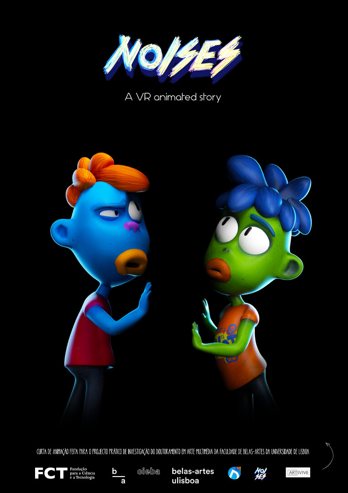
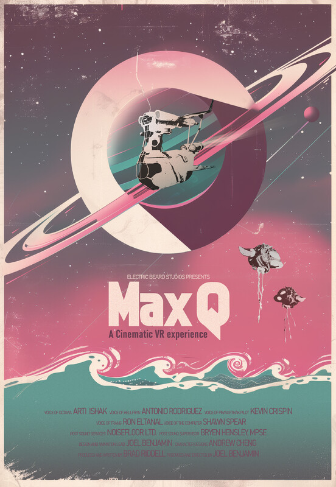
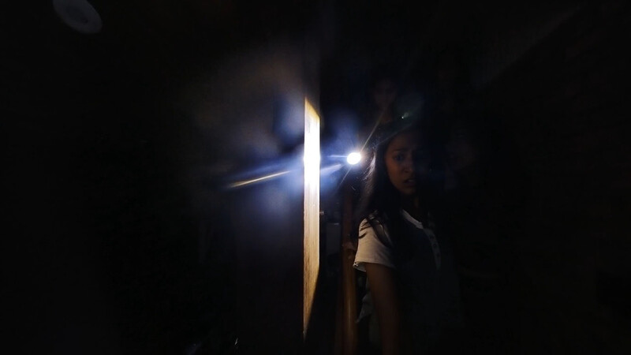
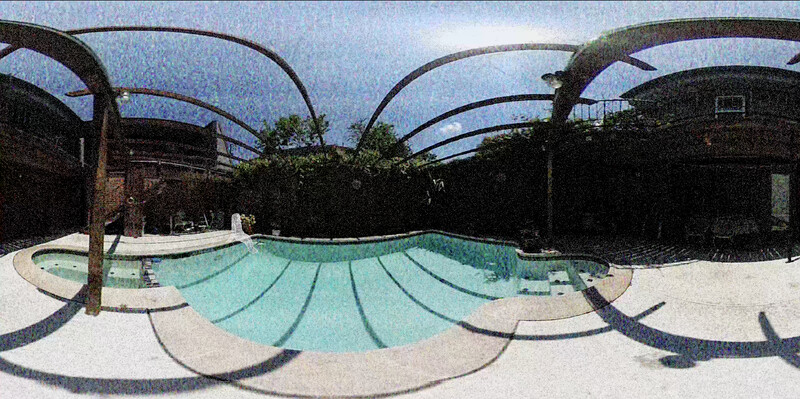
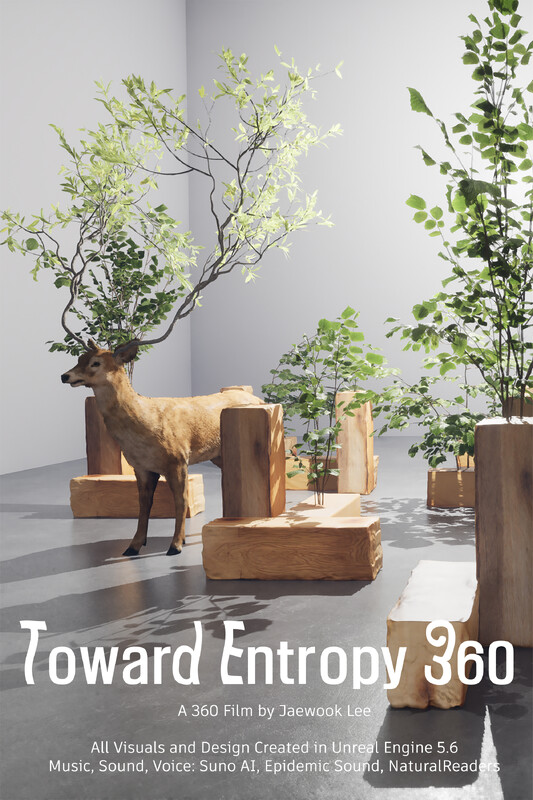

Kremfest 2025 XR Showcase
Welcome back to the future of live immersive art. VRMakerDome is proud to once again team up with Kremwerk to bring the Kremfest XR Showcase to life where electronic music meets boundary-pushing virtual worlds.
This year’s lineup blends interactive VR, cinematic 360° films, and experimental art experiences from visionary creators across the globe. Float into the sky on the whimsical UpLiftVR ‘Maiden Flight’ Balloon Ride, or witness the surreal and awe inspiring beauty of a total solar eclipse in High Desert Eclipse. Step into deep space with Joel Benjamin’s Max Q, where a survey team’s rescue mission tests the limits of survival and human connection. Or explore Diana David’s Noises, a multi-perspective interactive story where parallel narratives intersect based on user choice, leading to multiple endings.
Alongside these headliners and likely award winning selections, the showcase features experimental horror, meditative 360° journeys, and avant-garde XR storytelling all designed to spark curiosity and expand what’s possible when art, film, and immersive technology collide.
✦
Headline Experiences from UpLiftVR Studios

UpLiftVR ‘Maiden Flight’ Balloon Ride
By Larry James & Julia Jackson
Feeling as if you are lifting into the heavens on a balloon ride's maiden flight and find yourself overlooking a wondrous land calling out to be explored.
"One of the most powerful experiences in the [SIFF] VR-Zone isn’t a film but a piece of whimsical semi-interactive entertainment."
— The Seattle Times
Step into the headset and launch into the heavens on a balloon ride's experimental maiden flight. Overlook a wondrous, dreamlike world calling out to be explored. During your descent from the clouds to the ground, experience the whimsical beginning of a series of grand adventures.
- Genre: Interactive Cinematic VR
- Runtime: 3 min 30 sec
- Format: Interactive VR (Meta Quest 3 or PCVR Quest Link)
- VR Comfort: Moderate (Simulated height and gentle movement)
✦

High Desert Eclipse
By Larry James & Julia Jackson
From your remote majestic hilltop overlook see the rapidly encroaching shadow of the moon turn day into twilight as the entire scenic horizon becomes sunrise and sunset during the high desert eclipse.
"Majestic but also chill! A once-in-a-lifetime experience that can be enjoyed by everyone - great example of why VR is a fantastic communicator."
— Meta Quest 2 Reviewer
From a majestic hilltop overlook in the remote Oregon high desert, witness the shadow of the moon sweep across the landscape during the total solar eclipse of August 21, 2017, transforming day into twilight and the entire horizon into sunrise and sunset.
- Genre: 360° Documentary
- Runtime: 6 min 30 sec
- Format: 360° Video (Meta Quest)
- VR Comfort: Comfortable (Static camera position)
✦
2025 Showcase Lineup at a Glance
- UpLiftVR ‘Maiden Flight’ Balloon Ride • Larry James & Julia Jackson • 3 min 30 sec • USA
- High Desert Eclipse • Larry James & Julia Jackson • 6 min 30 sec • USA
- Noises • Diana David • ~3-5 min per path (~15 min total exploration) • Portugal
- Max Q • Joel Benjamin • 17 min 30 sec • USA
- The Encounter • Jaishankar Srinivasan • 10 min 07 sec • USA
- Meridian Transmissions • Eric Patrick • 12 min 56 sec • USA
- Toward Entropy 360 • Jaewook Lee • 15 min 00 sec • USA
✦
2025 Official Selections

Noises
By Diana David
An animated narrative featuring two parallel stories that can intersect depending on the choices made by each user. This interplay leads to four possible endings and seven different narrative perspectives offering a dynamic and immersive storytelling experience.
- Genre: Interactive Animated Story
- Runtime: ~3-5 min per path (~15 min total exploration)
- Format: Interactive VR (Standalone .apk for Quest)
- VR Comfort: Comfortable (Third-person viewpoint)
✦

Max Q
By Joel Benjamin
An animated 6DOF virtual reality film about a deep space survey team that finds their relationships pushed to the brink when they embark upon a dangerous search and rescue mission on an unexplored alien world.
- Genre: Animated Sci-Fi Narrative
- Runtime: 17 min 30 sec
- Format: 6DoF Interactive VR (Requires PCVR - Vive recommended)
- VR Comfort: Comfortable (Anchored in a spaceship cockpit)
✦

The Encounter
By Jaishankar Srinivasan
A groundbreaking, experimental, single-shot, 360-degree virtual reality horror short film. Features music by Karthik Aacharya, utilizing spatial audio and chilling visuals.
- Genre: 360° Horror
- Runtime: 10 min 07 sec
- Format: 360° Video
- VR Comfort: Intense (Contains intense horror elements and significant camera movement)
✦

Meridian Transmissions
By Eric Patrick
A quotidian meditation on surveillance and the decay of modernity. Explores architectural geometry, industrial textures, and audio-reactive pacing in complete 360 degrees.
- Genre: Experimental 360° Animation
- Runtime: 12 min 56 sec
- Format: 360° Video
- VR Comfort: Comfortable
✦

Toward Entropy 360
By Jaewook Lee
An immersive 360° film where land art’s monumental gestures meet the quiet persistence of nature as plants reclaim the ground and water rises. This poetic work questions the permanence of human ambition in a world increasingly defined by change.
- Genre: Experimental 360° Art Film
- Runtime: 15 min 00 sec
- Format: 360° Video
- VR Comfort: Intense (Requires review; non-standard camera movement noted)
✦
About the Presenters
Curated by VRMakerDome (and KremfestXR)
The Kremfest XR Showcase is curated and presented by VRMakerDome, a Seattle-based collective dedicated to supporting and showcasing the Pacific Northwest's immersive arts and creator community.
Follow VRMakerDome on Facebook
Hosted by Kremfest
Kremfest is the flagship multimedia arts festival from Kremwerk, celebrated as a vital hub for forward-thinking electronic music, cutting-edge creativity, and Seattle's diverse and inclusive arts community.
Explore the full festival lineup at Kremwerk.com
Headlining Experiences by UpLiftVR Studios
This year's headline experiences are created by UpLiftVR Studios, an independent studio focused on crafting immersive VR journeys that spark wonder, connection, and joy.
Discover more projects from UpLiftVR Studios on Itch.io
✦
Previous KremFestXR
The showcase builds on a legacy of immersive art and community. First launched in 2017, the Kremfest XR Showcase has become a beloved part of the festival and a unique space where Seattle’s eclectic electronic music scene collides with groundbreaking XR storytelling.
We're over the moon to be back at our favorite venue after the long pandemic pause, continuing our tradition of blending mind-bending visuals with incredible sound in a one-of-a-kind venue. Here’s a look back at some of the magic from past showcases—we can't wait to create new memories and see you on the floor for this year's lineup!
✦ EXPERIENTIAL DESIGN • SPATIAL XR • CREATIVE DIRECTION
Looking for Visionary Spatial Design, Interactive Portals, or Festival Curation?
Crafted by Larry James at Wulf Design Studios. From large-scale interactive XR exhibitions, festival curation, and spatial computing to visionary visual branding, 3D world architecture, and bespoke digital portals across music, art, and tech festivals worldwide.